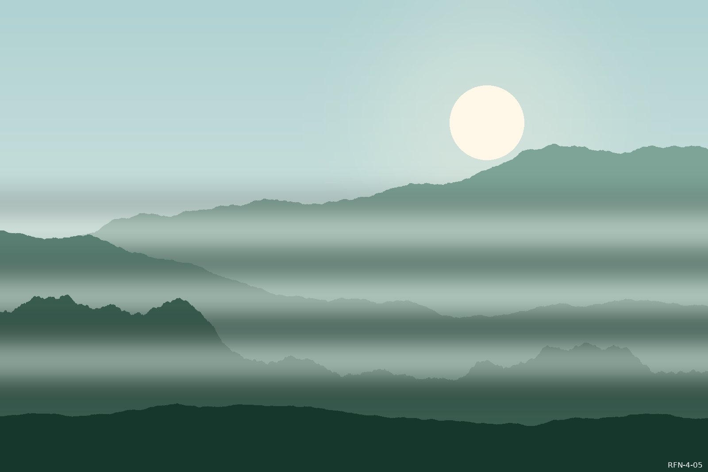
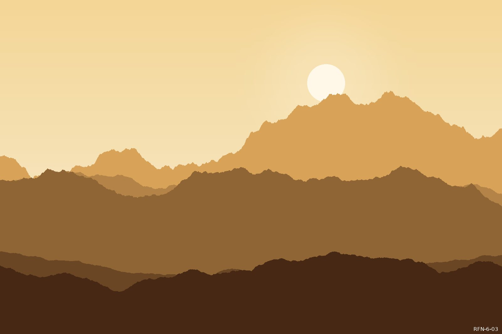

Skip to content
Ridgeline Field Notes
Galleries
Videos
Journal
About
Journal
Three mornings on the headland
2026-03-01
Scouting the mesa country
2026-03-24
Before the pass closes
2026-04-16

Notes on photographing fog
2026-05-09
A week of braided rivers
2026-06-01

Waiting for moonrise
2026-06-24